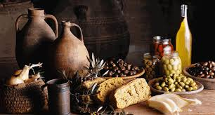

Breakfast Arcade

Egg-citing News! Presenting a New Breakfast Arcade game to play! You will flip for this fun! Play this as you wait for your breakfest to be ready!
Breakfast Recipes
.jpg)
Use the breakfast recipe tab to find recipes that you may like! for example you might find a recipe for pancakes like thsese!
Developers API Resource
Origin Of Breakfast
The origins of breakfast are thought to date back to the ancient world, when people would break their fasts with a simple meal before starting their day. The first known reference to breakfast in English dates back to the 15th century, when it was mentioned in a work by author Thomas Nashe.
Breakfast Facts!
Continental vs. English: The terms "continental breakfast" and "English breakfast" are widely used. A continental breakfast typically includes pastries, fruit, and beverages, while an English breakfast features eggs, bacon, sausages, and other cooked items.
Origin Of Arcades

Arcades, in the realm of gaming, trace their origins back to the late 1970s and early 1980s. Before the prevalence of in-home gaming consoles, arcades were the primary venues for video games. These establishments were filled with rows of upright video game cabinets, each dedicated to a specific game.
Arcade Facts!